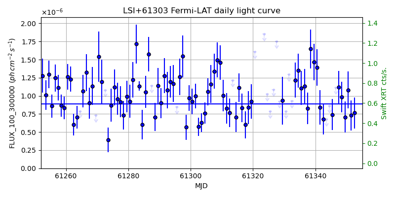
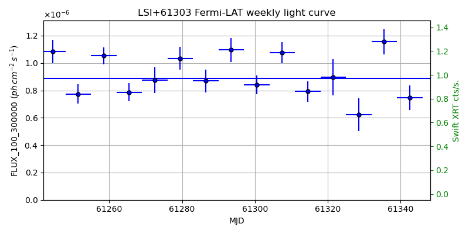
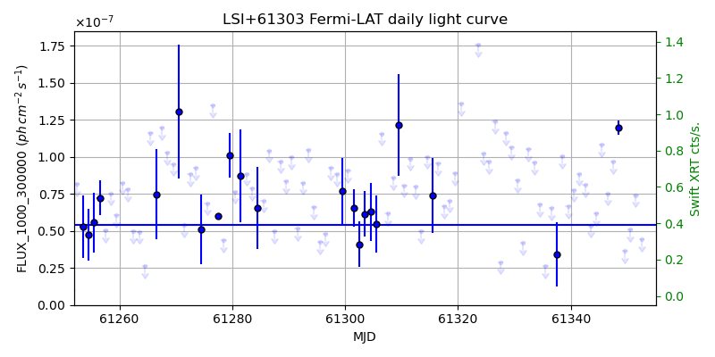
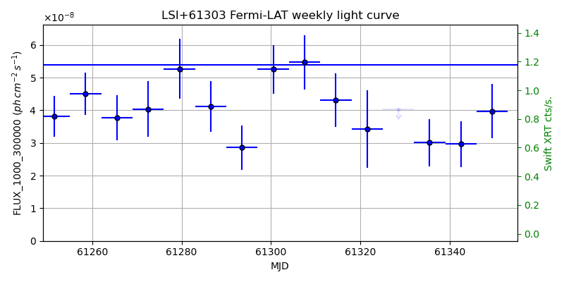

LAT Lightcurve site: https://fermi.gsfc.nasa.gov/ssc/data/access/lat/msl_lc/source/LSI_p61_303
Swift site: https://www.swift.psu.edu/monitoring/source.php?source=LSI+61303
NED: Query
Time of last update of this page: UT: 2026-11-06 16:13 (MJD: 61350.676)
| Property | Value |
|---|---|
| R.A. | 2:40:31.44 |
| Dec. | 61:13:44.4 |
| z | 0.000 |
| 3FGL SpectrumType | LogParabola |
| 3FGL PL Index | |
| 3FGL Flux_100_300000 | 8.90e-07 1 / (s cm2) |
| 3FGL Flux_1000_300000 | 5.39e-08 1 / (s cm2) |
| 3FGL Flux >200 GeV | 7.50e-12 1 / (s cm2) |
| 3FGL Extrap. Crab >200 GeV | 0.03 |
| 3FGL Flux After EBL Absorption >200GeV | 7.50e-12 1 / (s cm2) |
| 3FGL EBL Crab Fraction >200GeV | 0.03 |

| MJD | dMJD | Flux | dFlux | Frac3FGL | FracCrab>200GeV | EBLFracCrab>200GeV |
|---|---|---|---|---|---|---|
| 61345.50 | 0.50 | 7.39e-07 | 2.14e-07 | 0.83 | 0.03 | 0.03 |
| 61346.50 | 0.50 | 1.11e-06 | 0.00e+00 | 0.00 | 0.00 | 0.00 |
| 61347.50 | 0.50 | 1.12e-06 | 2.29e-07 | 1.25 | 0.04 | 0.04 |
| 61348.50 | 0.50 | 9.84e-07 | 2.08e-07 | 1.11 | 0.04 | 0.04 |
| 61349.50 | 0.50 | 7.07e-07 | 2.13e-07 | 0.79 | 0.03 | 0.03 |

| MJD | dMJD | Flux | dFlux | Frac3FGL | FracCrab>200GeV | EBLFracCrab>200GeV |
|---|---|---|---|---|---|---|
| 61314.50 | 3.50 | 7.93e-07 | 7.54e-08 | 0.89 | 0.03 | 0.03 |
| 61321.50 | 3.50 | 8.95e-07 | 1.32e-07 | 1.01 | 0.03 | 0.03 |
| 61328.50 | 3.50 | 6.22e-07 | 1.20e-07 | 0.70 | 0.02 | 0.02 |
| 61335.50 | 3.50 | 1.16e-06 | 9.18e-08 | 1.30 | 0.04 | 0.04 |
| 61342.50 | 3.50 | 7.46e-07 | 9.06e-08 | 0.84 | 0.03 | 0.03 |

| MJD | dMJD | Flux | dFlux | Frac3FGL | FracCrab>200GeV | EBLFracCrab>200GeV |
|---|---|---|---|---|---|---|
| 61345.50 | 0.50 | 1.08e-07 | 0.00e+00 | 0.00 | 0.00 | 0.00 |
| 61346.50 | 0.50 | 7.53e-08 | 0.00e+00 | 0.00 | 0.00 | 0.00 |
| 61347.50 | 0.50 | 9.66e-08 | 0.00e+00 | 0.00 | 0.00 | 0.00 |
| 61348.50 | 0.50 | 1.20e-07 | 4.89e-09 | 2.23 | 0.07 | 0.07 |
| 61349.50 | 0.50 | 3.66e-08 | 0.00e+00 | 0.00 | 0.00 | 0.00 |

| MJD | dMJD | Flux | dFlux | Frac3FGL | FracCrab>200GeV | EBLFracCrab>200GeV |
|---|---|---|---|---|---|---|
| 61314.50 | 3.50 | 4.31e-08 | 8.23e-09 | 0.80 | 0.03 | 0.03 |
| 61321.50 | 3.50 | 3.43e-08 | 1.19e-08 | 0.64 | 0.02 | 0.02 |
| 61328.50 | 3.50 | 4.03e-08 | 0.00e+00 | 0.00 | 0.00 | 0.00 |
| 61335.50 | 3.50 | 3.01e-08 | 7.26e-09 | 0.56 | 0.02 | 0.02 |
| 61342.50 | 3.50 | 2.97e-08 | 7.04e-09 | 0.55 | 0.02 | 0.02 |
--------------------------------------------------------- Using user-supplied coords: 2:40:31.44 61:13:44.4 2000 --------------------------------------------------------- FLWO UT night of: 2026-11-07 Local Sid. @ Midnight: 02:42 Sunset (-15.0) (local, UT): 18:39 01:39 Sunrise (-15.0) (local, UT): 05:36 12:36 Moonrise (local, UT): 05:16 12:16 Moonset (local, UT): Moon phase: 0.04 --------------------------------------------------------- AzTime LSID UT Obj_el Obj_az Mn_el Mn_az Sep. --------------------------------------------------------- 18:39 21:20 01:39 31.9 33.8 -35.5 278.9 126.8 19:09 21:50 02:09 35.4 34.3 -41.6 283.5 126.9 19:39 22:20 02:39 39.0 34.2 -47.5 288.8 127.1 20:09 22:50 03:09 42.6 33.5 -53.3 295.3 127.3 20:39 23:20 03:39 46.1 32.2 -58.7 303.4 127.5 21:09 23:50 04:09 49.4 30.2 -63.5 313.9 127.6 21:39 00:20 04:39 52.5 27.2 -67.5 328.0 127.8 22:09 00:50 05:09 55.2 23.2 -70.0 346.2 128.0 22:39 01:20 05:39 57.5 18.1 -70.5 6.9 128.2 23:09 01:51 06:09 59.2 12.1 -68.8 26.6 128.4 23:39 02:21 06:39 60.1 5.2 -65.4 42.5 128.6 00:09 02:51 07:09 60.3 357.9 -60.9 54.4 128.8 00:39 03:21 07:39 59.7 350.8 -55.8 63.5 129.0 01:09 03:51 08:09 58.3 344.4 -50.2 70.6 129.2 01:39 04:21 08:39 56.3 338.9 -44.4 76.4 129.4 02:09 04:51 09:09 53.7 334.4 -38.4 81.4 129.5 02:39 05:21 09:39 50.8 331.0 -32.4 85.8 129.7 03:09 05:51 10:09 47.6 328.6 -26.3 89.9 129.9 03:39 06:21 10:39 44.1 326.9 -20.2 93.7 130.1 04:09 06:51 11:09 40.6 326.0 -14.2 97.5 130.3 04:39 07:21 11:39 37.0 325.7 -8.1 101.2 130.5 05:09 07:52 12:09 33.4 325.9 -1.2 105.0 130.7 05:36 08:19 12:36 30.2 326.5 3.4 108.6 130.8 --------------------------------------------------------- Dark hours >55 deg.: 3.80 srcstart (UT): 2026-11-07 05:06 srcend (UT): 2026-11-07 08:54